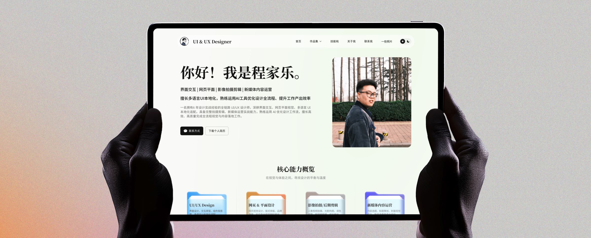
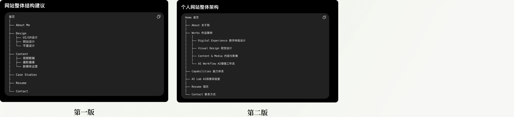
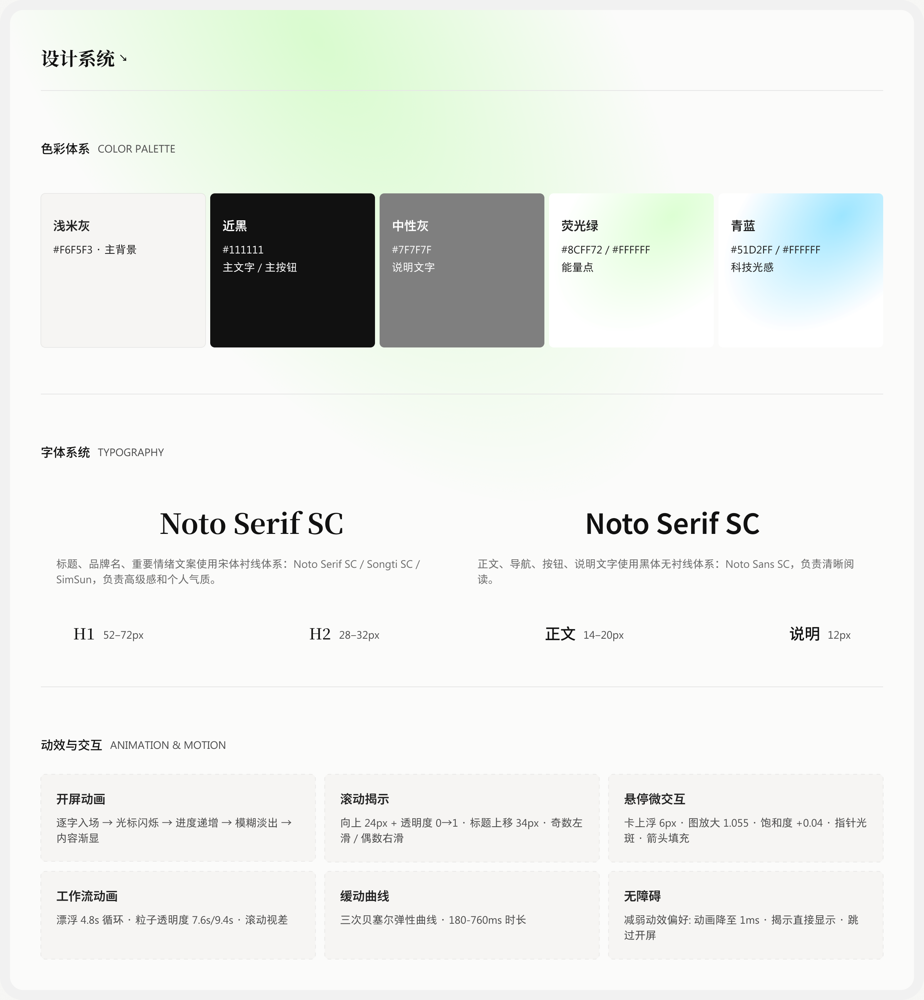
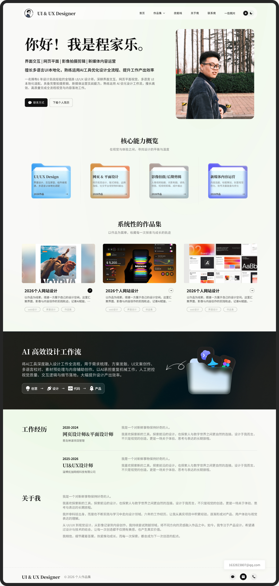

我的个人网站，是怎么从一个想法变成现实的
让作品被看见，也让设计思考留下来

其实早在 2024 年，我就开始筹划做一个属于自己的个人网站。
之前找工作的时候，因为时间比较紧，我曾经用 Figma 做过一个“伪网页”。它看起来像一个网站，但本质上还是一个原型。虽然当时没有真正部署上线，但它在求职过程中确实帮了我不少，也让我第一次认真意识到，个人网站其实不只是一个展示作品的地方。
所以这一次，我想把它真正做出来。
不是一个 Figma 原型，也不是一个只存在于作品集里的概念，而是一个可以直接输入网址、在浏览器里打开、真正属于我的网站。
对我来说，它也不仅仅是一个 Portfolio。
我更希望它成为一个记录自己成长的地方。每一年，我都可以用当时喜欢的技术、视觉风格和正在思考的问题，重新做一次网站。几年以后再回头看，也许会发现审美变了，技术变了，甚至自己对设计的理解也变了。
而这些变化，本身就是我想留下来的东西。
01｜为什么要做一个个人网站？
这些年一直在做界面交互、网页视觉、多语言 UI 本地化，也陆续接触了平面视觉、影像拍摄与剪辑、新媒体内容运营等不同类型的工作。
随着工作的积累，我越来越觉得，“设计师”这个身份其实很难被几个技能关键词完整概括。
我会做 UI，不代表我只关注界面。
我做网页，也不只是把页面设计得好看。
我会拍摄、剪辑，也会研究新媒体内容。
最近又开始把 AI 工具逐渐融入设计工作流，思考怎样让一些重复性的工作变得更加高效，把更多时间留给真正需要思考和创造的事情。
所以我希望有一个地方，可以把这些东西放在一起。
它不需要特别标准，也不需要像简历一样把所有经历排列整齐。
它只需要真实地记录：
现在的我是什么样子。
02｜这次的网站从哪里开始？
在 AI 工具大行其道的今天，使用 AI 生成网站的工具已经数不胜数，不管是 Codex，还是 Claude Design、Lovart、Framer、Cursor、Kimi 等，都能非常便捷地生成高质量网站。
最后我还是决定用 Chatgpt+Figma MCP+Codex 来实现这个网站。
03｜网站框架的确定
确定做网站之后，我没有一开始就急着打开 Figma 画页面，而是先重新梳理自己。
我把过往的设计经验、擅长的方向、掌握的技能以及正在探索的东西整理出来，交给 ChatGPT 帮我分析和归纳。通过几轮沟通，我逐渐把原本比较零散的信息整理成清晰的内容结构，再进一步梳理成网站的信息架构和页面框架。

最后再结合了两版的取舍，有了现在最终版本的网站架构。
04｜网站风格的确定
整体结构确定之后，脑海里的画面也渐渐成型。但有一段时间，我不想要一个标准答案式的 Portfolio——既不是那种模板化的作品罗列，也不是一眼就能看出“套了某个商业模板”的网站。
我更希望它能透出一点“这是我做的”的个人痕迹：一些不按常规出牌的小巧思，一些只属于这个人的细节。当然，前提是这些“不规矩”不能干扰阅读和作品本身的展示。
在动手之前，我习惯先回到 Dribbble、Pinterest、小红书这类素材网站，把脑子里那种“说不清但隐约有画面”的感觉具象化。喜欢的就存下来，不喜欢的也看一眼，后者往往更能帮我确认“我不想要什么”。
几轮筛选之后，我手里留下了两个方向的参考：一版偏极简编辑感，另一版偏柔和氛围感。最终基本其实是两者的“交集”——保留了编辑感的克制和排版节奏，但借用了氛围感在视觉上明显温度。
05｜网站的设计系统
在确定网站的整体框架和视觉风格后，我开始着手进行具体设计。这次我没有直接通过 AI + Skill 生成整个网站，因为我并不希望最终呈现出过于模板化的效果。
对我来说，AI 更适合辅助和拓展，而设计本身，尤其是视觉和体验的判断，依然应该由设计师亲自完成。

06｜页面展示
